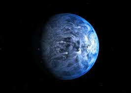
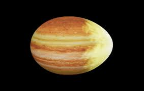
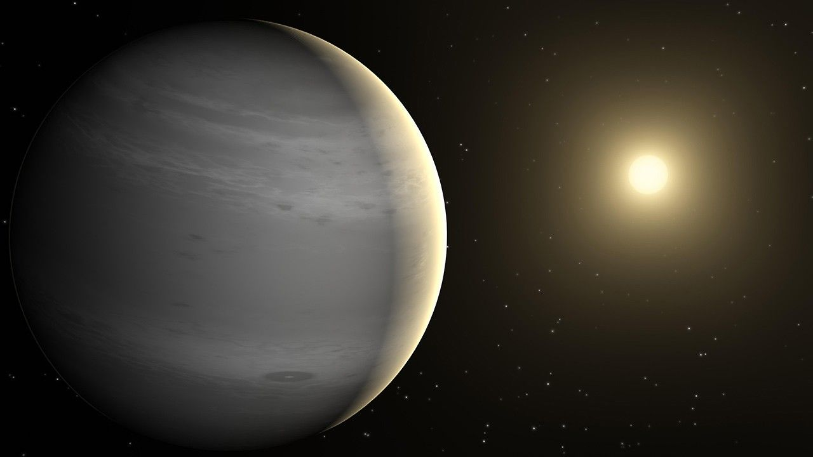

What is a Planet?
According to the current definition by the International Astronomical Union (IAU), a planet is a celestial body that:
- Orbits the Sun.
- Is massive enough for its own gravity to make it nearly round in shape.
- Has cleared the neighborhood around its orbit of other objects.
In 2006, this definition led to a major change in our understanding of the solar system, as Pluto was reclassified from a planet to a "dwarf planet." This decision was based on the fact that Pluto has not cleared its orbital neighborhood of other debris.
Planets are divided into two broad types based on their compositions: terrestrial (rocky) planets and gas giants. The terrestrial planets—Mercury, Venus, Earth, and Mars—are dense and rocky, while the gas giants—Jupiter and Saturn—and the ice giants—Uranus and Neptune—are composed mostly of gases and ices.
As technology advances, astronomers continue to discover thousands of exoplanets—planets orbiting other stars beyond our solar system. These findings challenge our understanding of planet formation and diversity, and suggest that planetary systems are common in our galaxy.
Our definition of a planet may continue to evolve as new discoveries are made and as our exploration of the universe progresses.
Strangest Planets Discovered
Beyond our solar system, astronomers have discovered thousands of exoplanets. Among them, some stand out as truly bizarre worlds—raining glass, burning with diamond crusts, or even being consumed by their own stars. Here are a few of the strangest planets ever found.

HD 189733b
This deep-blue exoplanet experiences glass rain blown sideways by 8,700 km/h winds one of the most violent known worlds.

WASP-12b
This hot Jupiter is being slowly eaten by its star, forming a trail of atmospheric material behind it.

PSR B1620-26 b
Known as the Methuselah planet, this world is over 12 billion years old twice as old as Earth and almost as old as the universe.